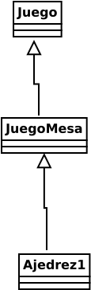
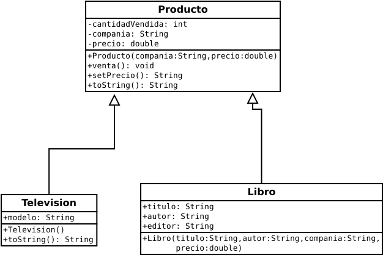
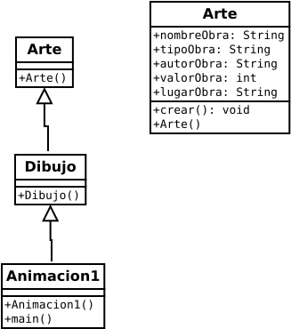
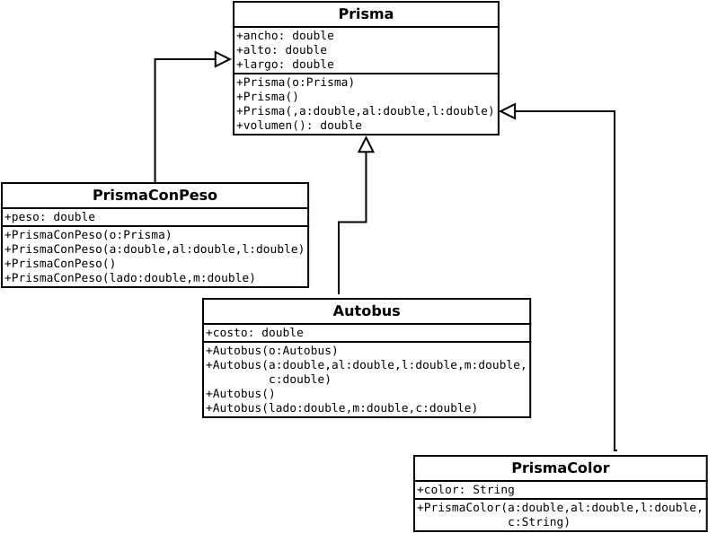

HERENCIA ENTRE CLASES
Determinación de características de la superclase y la subclase.
Requerimiento. Se requiere generalizar todas las formas geométricas planas. Por lo que hacemos una superclase con las siguientes características: el relleno de la figura, color de la figura. El nombre de la superclase, es: "FiguraGeometrica".
Solución. Se considera que hay una superclase "FiguraGeometrica" y la subclase es depenediendo de las figuras que se necesiten. En este caso la subclase es "Circulo".La superclase.
FiguraGeometricaLa subclase.
CirculoUna superclase hereda características a la o las subclases.
Codificación de la superclase y de la subclase
public class FiguraGeometrica { }public class Circulo { }Determinación de características de la superclase y la subclase.
Requerimiento. Se requiere formar una superclase que contenga características del "reino vegetal", por lo que las características generales, son: nombre del vegetal, tiempo de vida del vegetal, clima de crecimiento del vegetal, fecha de plantación.
Solución. Se considera que hay una superclase llamada "ReinoVegetal" y la subclase es depenediendo de los vegetales que se consideren. En este caso la subclase es "Arbol".La superclase.
ReinoVegetalLa subclase.
ArbolUna superclase hereda características a la o las subclases.
Codificación de la superclase y de la subclase
public class ReinoVegetal { }public class Arbol { }Uso de la palabra "super"
La palabra clave "super" tiene un uso: es el que hace referencia al constructor de la superclase.
El otro uso de la palabra clave "super", es de la siguiente manera: es el que hace referencia a un miembro del constructor de la superclase. Donde el miembro es un campo de datos o un método.
super.miembro;Class A { int i; } cass B extends A { int i; B(int a, int b) { super.i = a; i = b; } void mostrar() { System.out.println("Campo de dato i en la superclase " + super.i); System.out.println("Campo de dato i en la subclase " + i); } } class UsoSuperMiembro { public static void main(String[] args) { B subO = new B(1, 2); subO.mostrar(); } }
Diagramas de clase
Diagrama FiguraGeometrica con link SNPoo/heClaseFigurageometrica.svg
Diagrama ReinoVegetal con link SNPoo/ReinoVegetal.svg
Diagrama Ajedrez1 con link SNPoo/Ajedrez1.svg

Diagrama Producto con link SNPoo/DiagramaProducto.svg

Diagrama Producto con link SNPoo/DiagramaProducto.svg
Diagrama Arte con link SNPoo/DiagramaClaseArte.svg

Diagrama Autobús con link SNPoo/Autobus.svg

Las partes que componen a un programa: Los campos de datos, los objetos, los métodos.
Uso del método equals() en el programa "Estudiante.java"
public boolean equals(Object unObjeto) { Estudiante e1 = (Estudiante) unObjeto; return e1.nombre.equals(nombre) && e1.direccion.equals(direccion); }Para definir el método main, es como sigue:
Estudiante e1 = new Estudiante("Tomás"); e1.setDireccion("Av Othon de Mendizabal 234"); Estudiante e2 = new Estudiante("Daniel"); e2.setDireccion("Av IPN 344"); if(e1.equals(e2)) { System.out.println("El estudiante es el mismo que el estuadiante"); } else { System.out.println("El estudiante no es el mismo que el estuadiante"); }Uso del método toString() en el programa "Estudiante.java"
public class Estudiante { private String nombre; private int calificacion; public void setCalificacion(int calificacion) { this.calificacion = calificacion; } public int getCalificacion() { return calificacion; } public void setNombre(String nombre) { this.nombre = nombre; } public String getNombre() { return nombre; } public String toString() { return "El nombre del estudiante, es: " ; } public static void main(String[] args) { Estudiante e1 = new Estudiante(); e1.setNombre(" "); e1.setCalificacion(); System.out.println(e1.toString() + e1.getNombre() + "con calificación " + e1.getCalificacion()); } }Usar un método getSuma() en el programa "Suma.java"
public class Suma { private int a; private int b; private int suma; public int suma(int i1, int i2) { int suma = 0; for (int i = i1; i <= i2; i++) suma += i; return suma; } public String toString() { return "Para el intervalo, de: " ; } public static void main(String[] args) { Suma sum = new Suma(); System.out.println(sum.toString() + sum.suma(1,10)); } }El programa "Fecha.java"
public class Fecha { private int dia; private int mes; private int anio; public Fecha() { dia = 1; mes = 1; anio = 1998; } public Fecha(int d1, int m1, int a1) { dia = d1; mes = m1; anio = a1; } public boolean equals(Object ob1) { if(!(ob1 instanceof Fecha)) return false; Fecha ob2 = (Fecha) ob1; return ob2.dia == dia && ob2.mes == mes && ob2.anio == anio; } public String toString() { return dia + "/" + mes + "/" + anio; } public static void main(String[] args) { Fecha f1 = new Fecha(28,2,2022); System.out.println(f1.toString()); } }CÓMO SE NOMBRA UN PROGRAMA EN JAVA
El nombre del programa en Java se forma de la clase principal seguido de la extensión java.
public class Estudiante { private String nombre; private int calificacion; public int getCalificacion() { return calificacion; } public void setNonbre(Strig nombre) { this.nombre = nombre; } public void setCalificacion(int calificacion) { this.calificacion = calificacion; } public static void main(String[] args) { Estudiante e1 = new Estudiante(); e1.setEstudiante("Aurelio"); e1.setCalificacion(6); } }El nombre del programa en Java es el siguiente:
El programa "Animal.java"
class Animal { static String a1; void comer() { System.out.println("EL " + a1 + " come croquetas"); } public static void main(String args[]) { Animal perro = new Animal(); a1 = "perro"; perro.comer(); } }